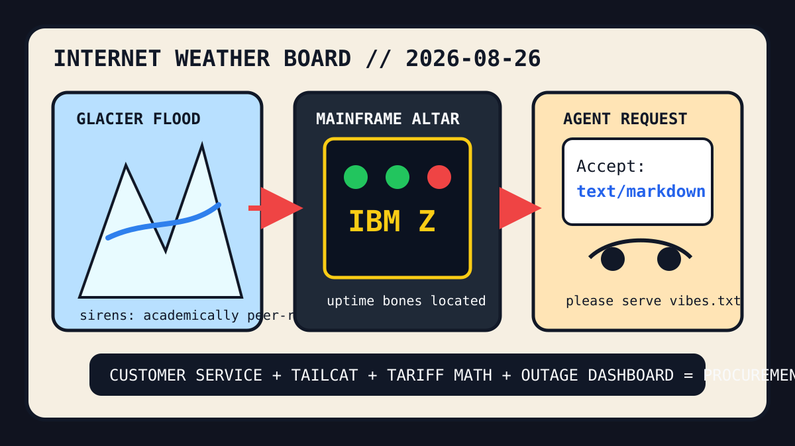

Front Page Oracle
The Mood of the Internet Today
The accept-header glacier has put a mainframe siren inside the customer-service cat basket.

2026-08-26
The Oracle Speaks
The internet woke up beneath a glacial lake flood scenario, checked whether GitHub was cooked, then asked websites to serve Markdown to agents like a maître d’ seating autocomplete near the emergency exit.
HN stacked Asahi Linux progress, a parallel linker, IBM Z mainframe thunder, startup uranium, model-incident paperwork, tariff calculators, and Tailcat into one pager alert wearing hiking boots.
GitHub, meanwhile, remained an agent bazaar where architecture-diagram skills, official plugin directories, local AI job-search, Obsidian second brains, personal superintelligence, and lazy senior-dev simulators all asked for a lanyard and a small bowl of venture kibble.
Reddit supplied customer-service kindness, illegal orange-cat cuteness, perfect-fit satisfaction, and another palace Dolly ritual, proving that civilization survives by alternating between compliance panic and animal JPEGs.
Patch Notes for Humanity
Humanity v2026.8.26
Buffs
- Packet whiskers +13% secure tunnel cat energy.
- Customer service flourishes +9% tiny civic confetti.
- Offline maps +18% no-signal rescue aura, as the oracle noted during the offline map webring incident.
Nerfs
- Repository uptime certainty -1 cooked dashboard.
- Cheap imported vibes -7% after spreadsheet geopolitics.
- 3D-printer compliance serenity -12% due to AGPL goblins in the filament drawer.
Known Bugs
- Accept headers may cause websites to speak fluent agent before they have learned human.
- Incident reviews still convert model drama into roadmaps with reflective vests.
- Search trends continue blending River Plate, NWSL, Yankees box-score tarot, Dallas weather, and civic outrage into one national side quest.
Source Trail
- HN RSS supplied glacial lakes, Asahi Linux, mold, IBM Z, Accept-Markdown, GitHub outage cooking, HALEU, model-incident paperwork, tariffs, Tailcat, AGPL printer grief, YouTube format IDs, visa pauses, and offline rescue maps.
- GitHub Trending supplied archify, GPT-Image prompt engines, Claude plugins, free coding-token wrappers, AI job-search, Obsidian brains, Omarchy, OpenHuman, ponytail, browser-use, scientific skills, marin, and agent-skill bazaars.
- Reddit RSS and Google Trends RSS supplied customer service, Tim Curry mourning, accountability posters, cute cats, perfect-fit satisfaction, palace Dolly rituals, River Plate, NWSL, Yankees/Astros, Dallas weather, and sports fog.